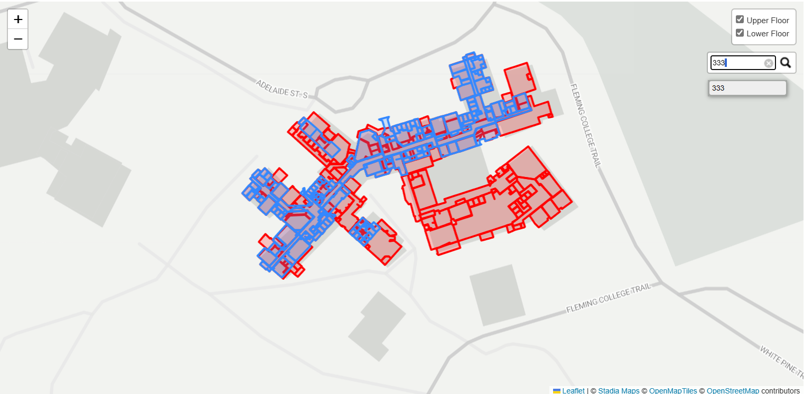
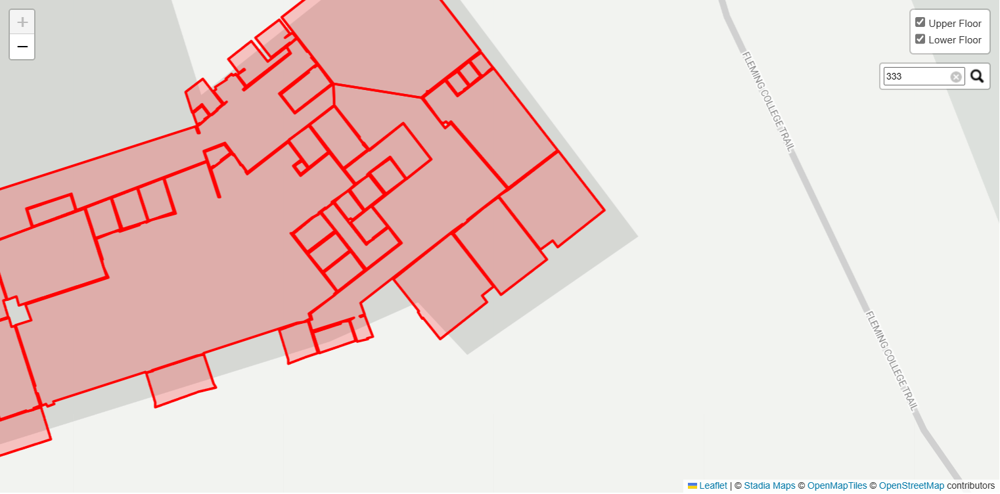
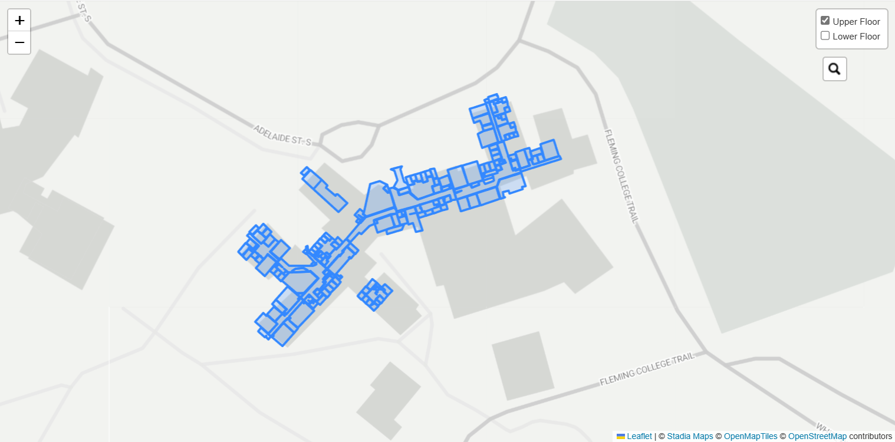

Working Together to Navigate Your World
Since 2024
The application below is a Leaflet map created using JavaScript, coded directly in this webpage (screenshots at bottom of page).
The goal of this group was to create a navigation map that allows visitors to see their location and the location of a searchable destination. On this map, users can toggle the upper and lower floor layers on and off, and input a room number into the search box which can autocomplete. The application then zooms in to the area where the room is found.
This is on the way to accomplishing what the group's end goal was. For a team without much JavaScript experience and no experience with Leaflet, all of the quirks of the open source library became time-consuming obstacles. A search box and layer visibility options are basic functionalities of online maps, but incorporating them into this map took the entire duration of this project. The tools and options are very specific and often unintuitive.
Next Steps: There are some issues that would need to be addressed to build upon the existing code. The current application does not drop a pin or highlight the room that is being searched for, only zooming into the general area. It also does not respond based on which layer the destination is in, requiring the map user to toggle manually. The search function is clunky, and on mobile forces the webpage to zoom in to the search bar without resetting to the map extent, which is bad UI. The layers sometimes display out of order, with the lower floor over top of the lower floor. If that could be sorted out, resymbolizing the map by room type would be a better solution than the two-colour symbology for the two floors. Finally, future work would need to be done to include a locator so the user can see their location in relation to the destination.
Leaflet is a very useful and customizable tool with many functionalities that are hard to find in an open source environment. However, harnessing the capabilities within Leaflet is a difficult process, especially for people without a strong background in JavaScript. An experienced Leaflet user would be able to accomplish the goal set out by the team only using Leaflet, and given enough time, S.S. Pathfinders likely could as well. The full application made using Leaflet would not require proprietary softwares or licenses, which depending on budget and available software, could justify the amount of work and/or expertise needed on the front-end.
Search box and layer toggle
Zoom in after clicking search
Toggle Function to show only the second floor
